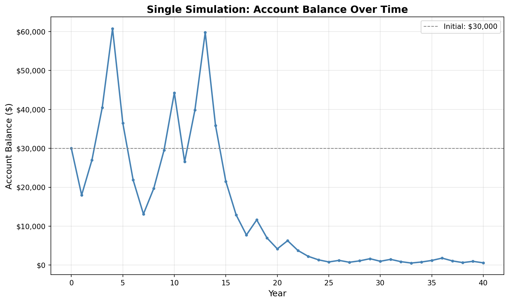
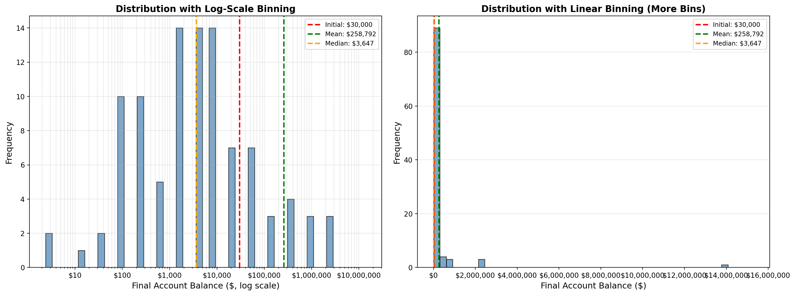
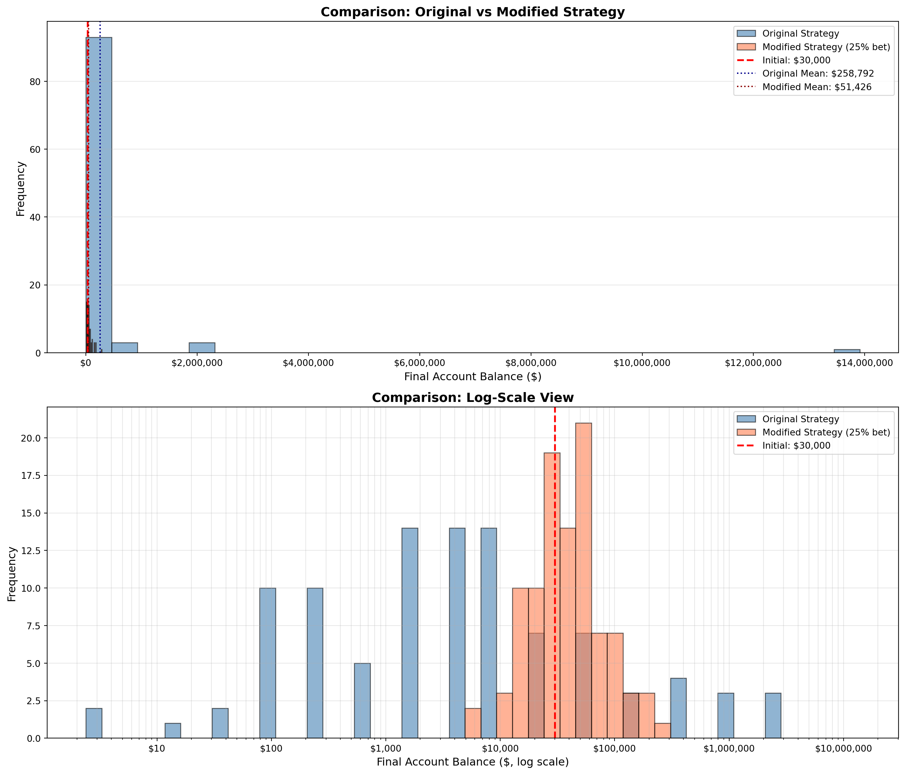

Initial Wealth: $30,000.00
Expected Value After 1 Flip: $31,500.00
Expected Gain: $1,500.00
Gain as Percentage of Buy-in: 5.00%
Comparison: Expected Value $31,500.00 > Initial $30,000.00Simulation Challenge
Starter Template with To-Dos
üé≤ Simulation Challenge - Starter Template
Importantüìã What You Need To Do
Warning⚠️ AI Partnership Required
Use Cursor AI for speed, but ensure you understand and can explain the results in your own words. Verify cursor’s calculations as investment simulation is tricky.
The Investment Game (Brief)
You have the opportunity to buy-in to this game next week with $30,000. Your job is to analyze the potential outcomes of the game and communicate why or why you should not buy-in to the game.
Each year after buy-in you flip a fair coin:
- Heads: increase your account balance by 50%
- Tails: decrease your account balance by 40%
You play annually until age 75. Your mission is to analyze outcomes and communicate insights clearly.
Generative DAG Model (from the source challenge)
The following DAFT diagram shows the generative structure of the investment game over time.
Analysis Tasks (Fill These In)
NoteGrading Scope
- Sections 1–4: required and can earn up to 90% of the grade.
- Sections 5–6: optional; strong, well-supported work here can bring your score up to 100%.
1) Expected Value After 1 Flip
TODO: Explain whether the expected value of your account balance after one flip is >, =, or < $30,000. What is the gain in expected value as a percentage of your buy-in? Does this simple analysis suggest you should buy-in to the game?
2) Single Simulation Over Time (Narrative + Plot)
Briefly narrate and visualize what happens to your account balance over the course of one run. Are you happy with the outcome? Why? or Why not? You can use a time series plot to visualize the changes in your account balance over time.
Initial Balance: $30,000.00
Final Balance: $583.57
Net Change: $-29,416.43
Return: -98.05%
3) 100 Simulations: Distribution of Final Balances
TODO: Visually and narratively describe the distribution of your account balance after running the 100 simulations. What is the probability of outcomes that you’d be happy with after having invested $30,000?
Summary Statistics from 100 Simulations:
Mean Final Balance: $258,791.71
Median Final Balance: $3,647.30
P(Final > $30,000): 0.210
Min Final Balance: $2.39
Max Final Balance: $13,913,343.95
4) Probability Balance > $30,000 at Age 75 (Original Game)
TODO: Report the probability estimate and interpret its practical meaning.
Probability Estimate: P(Final > $30,000)
Estimated Probability: 0.210
Breakdown:
Simulations with Final > $30,000: 21 out of 100
Simulations with Final ≤ $30,000: 79 out of 100
Interpretation: Approximately 21.0% of the time,
the final balance will exceed the initial $30,000 investment.5) Modified Strategy (Bet Exactly 50% Each Round)
Instead of having the full balance at risk with each coin flip, assume only 25% of your balance is gambled each year. Compare this to the original game. Which is riskier? Which has better upside?

============================================================
STRATEGY COMPARISON
============================================================
Original Strategy (Full Balance at Risk):
Mean Final Balance: $258,791.71
Median Final Balance: $3,647.30
P(Final > $30,000): 0.210
Min: $2.39, Max: $13,913,343.95
Modified Strategy (25% of Balance at Risk):
Mean Final Balance: $51,426.15
Median Final Balance: $38,461.12
P(Final > $30,000): 0.700
Min: $6,452.70, Max: $286,557.65
Comparison:
Mean Difference: $-207,365.56 (-80.1%)
Median Difference: $34,813.82 (+954.5%)
Probability Difference: +0.490
Max Balance - Original: $13,913,343.95
Max Balance - Modified: $286,557.656) Briefly Explain Your Findings From The Previous Step in Light of A Concept Known as the “Kelly Criterion”
What is the Kelly Criterion and how does it relate to the modified strategy?
The Kelly Criterion is a formula developed by John Kelly in 1956 that determines the optimal fraction of capital to bet in repeated investment opportunities to maximize long-term growth. The formula balances growth potential against risk of ruin.
For this investment game: - Original Strategy: Bets 100% of wealth each time (multipliers: 1.5 or 0.6) - Modified Strategy: Bets 25% of wealth each time (resulting multipliers: 1.125 or 0.9)
Kelly Criterion Analysis:
==================================================
Optimal Kelly Fraction: 0.248 (24.8%)
Maximum Expected Log Growth: 0.006211
Original Strategy (100% bet):
Expected Log Growth: -0.052680
Fraction Bet: 1.00 (100%)
Modified Strategy (25% bet):
Expected Log Growth: 0.006211
Fraction Bet: 0.25 (25%)
Optimal Kelly Strategy:
Expected Log Growth: 0.006211
Fraction Bet: 0.248 (24.8%)
Interpretation:
The modified strategy (25%) bets MORE than Kelly-optimal,
suggesting it may still be too aggressive for long-term growth.Key Insights:
Kelly Criterion Purpose: The Kelly Criterion finds the bet fraction that maximizes the expected logarithm of wealth over many periods, preventing ruin while maximizing growth.
Original Strategy (100% bet): This is “over-betting” relative to Kelly. While it offers higher expected returns, it carries higher risk of substantial losses and potential ruin over many periods.
Modified Strategy (25% bet): This is more conservative than the original strategy. It reduces volatility and the risk of severe drawdowns, even if it may sacrifice some expected return. Whether 25% is optimal depends on the Kelly calculation above.
Practical Implications:
- Risk Management: The modified strategy’s lower volatility makes it more suitable for investors with limited capital who cannot withstand large losses.
- Long-term Growth: While the original strategy might show higher means in simulations, it also has a much wider distribution, with many outcomes well below the initial investment.
- Kelly Principle: The Kelly Criterion suggests betting a fraction less than what might seem intuitively optimal, trading some upside for much better downside protection.
The modified strategy demonstrates the Kelly Criterion principle: better risk-adjusted returns often come from betting less than you might initially think is optimal, especially when facing asymmetric risks (large potential losses) like in this game.